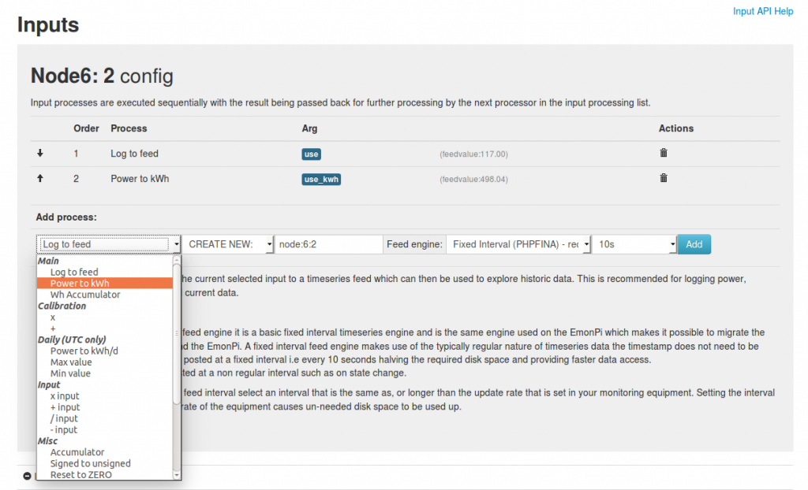
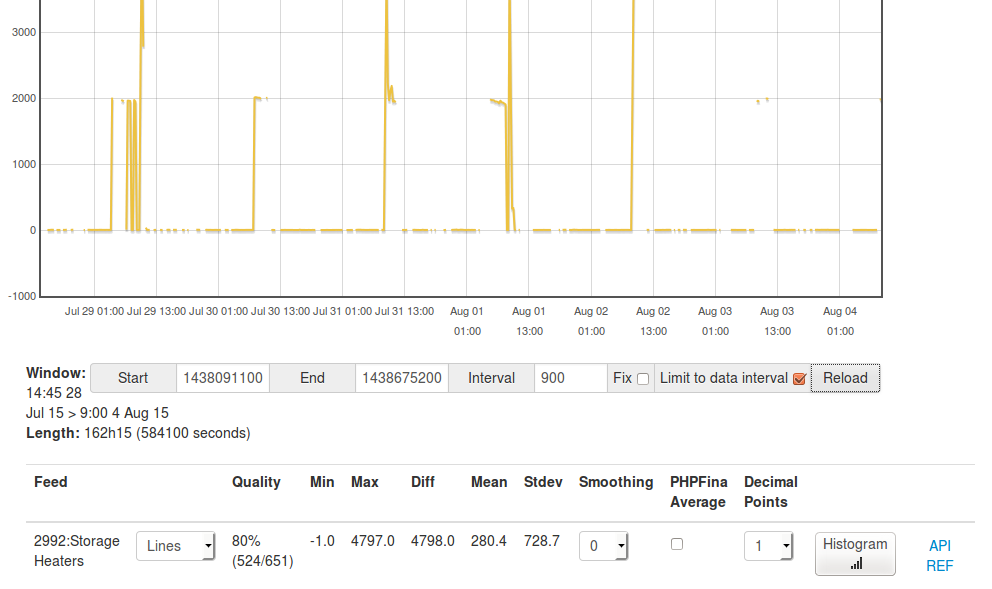

The last couple of weeks have seen quite a bit of work on emoncms.org with the aim of making it a more secure better maintained service. Emoncms.org now supports HTTPS and has a more advanced data viewer, not everything went quite to plan during the process of the server upgrade with accumulator resets affecting some kwh and daily kwh feeds. The server also suffered performance issues after the reboot which were ultimately fixed by moving the remaining mysql data feeds to phptimeseries.
The number of users and feeds on emoncms.org has grown significantly over the years, there are now 22000 active feeds up from 13000 this time last year. Feed data is stored across two dedicated servers with SSD drives. The version of emoncms running on emoncms.org has gone through quite a bit of modification to support the increasing load level, it features a faster input processing stage, processing queues and support for multiple storage servers. The latest version of the source code running on emoncms.org can be found here (see readme for more info): https://github.com/emoncms/emoncmsorg
For some time there has been a mixture of modules, input processors, visualisations etc. on emoncms.org at varying levels of completeness. Ssome of these less well maintained developments have been removed over the last year in order to focus on a core set of better maintained functionality. The next steps however, require larger changes. Here is my current proposal:
Histograms: Rather than generate histogram feeds as they are done now as part of input processing, adding additional disk write load at each update, configuration complication and feed engine support while not being particularly configurable in terms of histogram type and resolution, I would like to move the generation of histograms to a post processing step. At a basic level via the new graph interface which allows on the fly histograms to be built from any feed. And then perhaps as a second stage a post processor that can scan through a whole feed in order to build histograms with a more advanced set of options – it may however be better to do this locally using a desktop tool.
phpfiwa : PHPFiwa calculates a series of averaged layers for each feed so that when a data request is made over a long time scale the returned data provides an accurate representation of the underlying data. The way PHPFiwa is currently implemented means that for every datapoint added, the write load per datapoint can be 4x larger than PHPFina, as 3 additional files need to be written. Ideally, these averaged layers could be calculated as a post processing step so that larger blocks can be written at any one time – or, for the writing of these layers to be buffered in memory which would ideally be good to implement on emoncms.org for the base layer and phpfina as well. PHPFiwa was initially added before I appreciated the write load implications of updating each file in this way, which I have since written about here: https://github.com/openenergymonitor/documentation/blob/master/BuildingBlocks/TimeSeries/writeloadinvestigation.md. The low write version of emoncms does not support PHPFiwa or the histogram engine for the this reason.
Perhaps PHPFina and PHPFiwa could merge into one feed engine with a bit of work. Most of the time when data is posted it would write only to layer 0, essentially functioning as PHPFina does. Then, at the point where the data is requested, a property could be set in the data request that would request an averaged output. It would then compute the average up to the last point that it computed averages for, doing so in one efficient read and write step rather than on every update. PHPFina is currently the default feed engine on emoncms.org both to reduce disk wear and for increased portability moving feeds between emoncms.org and an emonbase/emonpi.
Complete move to accumulating kWh and Wh, i.e. away from daily input processors. Kwh per day/month/year could then be calculated on the fly from accumulating kWh feeds. The storage of the data is timezone independent and it's easier to cross reference with the reading from a billing meter. Ideally, the total kWh reading would be recorded on the emontx/emonpi itself and stored perhaps in battery backed memory – this could use the memory attached to an RTC module. This would provide a more accurate reading that would be independent of radio and internet connection issues. In the meantime, accumulating kWh data can be generated from power feeds with the power to kWh input processor. The visualisations simple zoom, zoom, stacked, stacked solar and order bars have been updated to support accumulating kwh feeds. There still needs to be a way to generate accumulating kwh data from existing power feeds via a post processing tool.
See this post on Creating kWh per day bar graphs from Accumulating kWh
Post-processor: build accumulating kwh feeds from power feeds, calculate weekly, monthly averages etc based on timezones and number of days in a month etc. histograms?
Front-end custom dashboards: Documentation on how to build custom front end websites that use emoncms.org for backend data storage. I've been putting together a application specific website for heatpump monitoring which does this, the code for which is here: https://github.com/openenergymonitor/HeatpumpMonitor/tree/master/Dashboard
MySolar app: Daily generation and consumption, import/export as part of the mysolar module.
Misc developments (to elaborate further on in further posts)
- Record feed name and tag to PHPFina feed meta files for use in exports – making these feeds more portable without a requirement to move the mysql database.
- Implement buffered writing on emoncms.org for phpfina to reduce disk wear.
- Fully documented and publicly accessible API.
- Improved API, remove not-technically-correct .json requirement, use request methods: GET, PUT, POST, DELETE
- Add ability to reset and delete old data in feeds.
- Email verification on account sign-up on emoncms.org
- Ability to change/generate new apikeys
- Ability to use input values in dashboards.
- Investigate possibility of using a MQTT server for receiving data into emoncms.org from monitors. What should the topic and message structure be? Authentication? Timestamps? Bulk uploads?
- Create a tool for efficient bulk upload of feed data to emoncms.org whether from existing emoncms feed engines or CSV etc.
Emoncms.org service, pricing, billing + admin & development role. In order to ensure the long term sustainability of emoncms.org as the number of servers required grow along with the associated development and server admin work certain levels of use will need to be on a pay-for basis – according to the number of feeds and duration of storage required. It is the intention that the income generated from this would be able to pay for a dedicated emoncms.org administration and development role, which we will open to the community here. More on this soon.
Re: Emoncms.org development: next steps
Good work Trystan. I've almost finished the initial version of my more secure sensor nodes which I'll push up to github soon.
Re: Emoncms.org development: next steps
Emoncms.org service, pricing, billing
Although probably not good news to many readers, it's a step that's probably long overdue, and if it funds an admin & development role, then all the better.
Nice write up, it's good to know your future development plans, and which direction emoncms is taking.
Paul
Re: Emoncms.org development: next steps
Thanks Paul, Stuart. appreciate your support and time reading through
Re: Emoncms.org development: next steps
Progress and recent changes to emoncms.org:

Next steps for emoncms.org
Later stage
The result of all of this will be a much more streamlined, simpler to use and easier to maintain emoncms.org. Moving as much as possible away from a reliance on input processing to post processing reduces the reliance on getting everything right at the setup stage and makes processed data recoverable, as its easy to rebuild in the event of a bug, server issue or incorrect initial implementation of a feature as well as providing more flexibility: the ability to modify and reprocess data at a later stage as requirements change.
The data core of emoncms consisting of the remaining input processes and core feed engines will be a more robust and simpler core that is easier to maintain as emoncms.org develops especially with the way its is distributed across several servers.
Re: Emoncms.org development: next steps
I've fixed these now on emoncms.org:
If your using cumulative kWh data created with the input process power_to_kwh on emoncms.org the visualisations bargraph, simplezoom, stacked solar, stacked and zoom + myelectric app will all return daily kWh data that is aligned to the timezone selected on the user profile page - which should complete timezone support across emoncms.org for cumulative kWh feeds.
A full page refresh might be needed to load the latest javascript.
If you have daily kWh data using the phptimeseries feed engine on emoncms.org the data is saved and reset at midnight UTC which has been a long running bug. For those on BST the changes to the visualisations required for power_to_kwh feeds mean that at least the day is correctly now for kWh/d phptimeseries data and the missing sunday 27th is back, although the kWh shown will be for the period defined by midnight UTC.
The post processing module will make it possible to re-process these feeds from their underlying power data feeds to a timezone correct form very soon.
Re: Emoncms.org development: next steps
The latest code on emoncmsorg is up here https://github.com/emoncms/emoncmsorg/commits/master. Im going to work out next how to copy the main changes around timezone support over to emoncms v9.
Re: Emoncms.org development: next steps
Changes to bargraph, simplezoom, stacked solar stacked and zoom visualisations to support timezone correct daily data for phpfina and phptimeseries have now been implemented on the emoncms v9 master branch for testing.
Re: Emoncms.org development: next steps
I've started with converting emoncms.org phpfiwa feeds to phpfina feeds today, its quite a simple operation but one thing I have noticed in a number of initial feeds is that if the posting to a particular feed is very sporadic or if the interval has been selected to be significantly less than the actual post interval the graph can show that there is no data present - the data is actually there its just that there are a lot of null values surrounding it. For example lets say we are posting data every 60s but the feed has been created at 10s feed interval. The underlying feed will look like this:
If the phpfina request method is not aligned to the data correctly, lets say the data was actually recorded 20s past the minute and the request is pulling data out every 60s, then the data returned will be empty even though its actually there.
I've ran a check on 15000 phpfina feeds on one of the emoncms.org storage servers to see how many feeds have more than 60% of the data as nan values based on the last 5000 datapoints in each feed and it's 32% which could mean that there are quite a large number of graphs not showing the underlying data that is present.
Re: Emoncms.org development: next steps
In order to make it possible to at least see the data recorded in phpfina feeds where the feed interval is less than the data post interval I've fast forwarded the introduction of the on the fly averaging (mean) I mentioned above. Its not the full implementation but it provides averaging for up to 1 week of data recorded at 10s.
So if you looking at your data in emoncms and it appears as thought there is none present this is how its possible to show the data:

I've pushed this all up to the emoncms master branch and graph module for other systems.
The longer term solution for feeds where the feed interval is shorter than the post rate is to recompile the feed to the correct interval but this is a bit more involved, perhaps a feature for the post processor module that's currently in development.
Re: Emoncms.org development: next steps
Hi guys,
Loving this project. But wondering about all the work you've been doing on database and dashboards. Have you guys looked into Grafana for presenting time series data? And what about using an existing time series database, such as graphite or influxdb? At my work we use send 1.3million metrics per minute to graphite. It's very robust.
I'm adding various sensors in my house and intend to log an assortment of metrics. emonPi is just one of them. So I was looking at using raintank and grafana.net. They are are hosting a graphite database and use grafana for dashboards. All very slick.
I'm going to start working on some emonHub interfaces shortly. I'll share them when I get something working.
Thanks!
Re: Emoncms.org development: next steps
Thanks hmmm01i, to be honest Im very happy with the current solution. Its very lightweight, I understand the code so can modify it to requirements, its scaling very well, the timeseries engine part occupies a very small fraction of the overall server load. The changes above are more a refinement and focus on a version of the timeseries engine I wrote that has now been stable and effective for quite some time. I did look a bit into graphite and I think its very good, I particularly enjoyed reading Chris Davis's contribution to the book architecture of open source book here http://aosabook.org/en/graphite.html
Re: Emoncms.org development: next steps
Would part of the solution be to add a check to the 'log to feeds process', to prevent, or at least warn users that they are about to create a process where the interval is less than the actual post interval. It wouldn't cure existing feeds, but may prevent future feeds from presenting this issue.
Paul
Re: Emoncms.org development: next steps
Yes something like that would be useful - emoncms would need to know somehow what the post interval is, perhaps the input module could record this as the nodes appear and then suggest the interval on feed creation?
Re: Emoncms.org development: next steps
I have now converted all PHPFiwa feeds on the first emoncms.org server to PHPFina which covers about half of the total.
Re: Emoncms.org development: next steps
All emoncms.org PHPFiwa feeds have now been converted to PHPFina which is one big step forwards in terms of simplifying and making emoncms.org more maintainable. It also means the same feed format is both supported on emoncms.org and the emonpi.
I've also made quite a bit of progress on the implementation of the on-the-fly averaging using PHPFina feeds mentioned above which will provide much of the functionality of PHPFiwa in a way that is more write efficient and with the benefit of the averaged layers being easily rebuildable from the base data. Its now possible to extract fully calculated averages covering up to 480 days with 10s data on any PHPFina feed on emoncms.org using the graph modules 'PHPFina average' tickbox as shown in the screenshot above.
Re: Emoncms.org development: next steps
Thanks for the reply Trystan. I wasn't familiar with that book. It is very good! I'm not much of a programmer myself so I'm prone to looking for existing solutions. However, I've started learning a bit recently and just had PR accepted to emonhub. :D I look forward to contributing more.
- Jacob
Re: Emoncms.org development: next steps
Emoncms.org has now got the input and feed api publicly accessible for reference:
https://emoncms.org/site/api#input
https://emoncms.org/site/api#feed
Re: Emoncms.org development: next steps
Id like to add to this a page on core concepts (i.e inputs, input processing and feeds), a page on generating kWh per day, week, month data and generating average data for temperature & humidity data.
Re: Emoncms.org development: next steps
Hi Trystan - making the api pages publicly available is a nice touch, the point of access may actually be better placed on the emoncms.org home screen with a short explanation for new users like the docs, github and install rather than on the navbar since it doesn't need to be on the navbar once logged in as there are links on the feeds page and inputs page for the pages prepopulated with an apikey and a new user without an account will only see the "logged out" navbar..
The "API" link looks a bit random when using just the readkey to view the apps, it does work and reveals the api docs when clicked but has very little relevance to the single target link. It's not really in keeping with the nice clean view you have only just achieved by removing the settings button for the readapi views.
Paul
Re: Emoncms.org development: next steps
Good point. I will do that, perhaps its worth having a link under setup, especially once I add a section on generating day, week, month, year kWh and temperature, humidity averages.
Re: Emoncms.org development: next steps
I've moved the api link under the setup section when logged in, at the moment it also shows in the menu bar when on the home page and logged out.
Re: Emoncms.org development: next steps
There is now a documentation page on creating daily kWh data available from the emoncms api pages: https://emoncms.org/site/api#dailykwh
Re: Emoncms.org development: next steps
Moving this to the new guide site: https://guide.openenergymonitor.org/setup/daily-kwh/